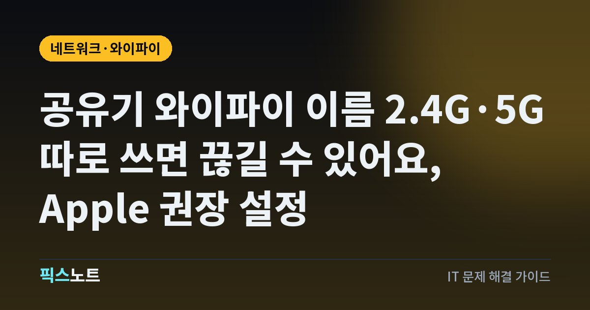

공유기 와이파이 이름 2.4G·5G 따로 쓰면 끊길 수 있어요, Apple 권장 설정
와이파이가 자주 끊기거나 느릴 때 Apple이 권하는 공유기 보안, 이름, 대역, 채널 설정을 정리했어요.

집 와이파이가 자꾸 끊기면 폰이나 노트북부터 의심하게 되죠. 그런데 원인이 공유기 설정에 있는 경우도 많아요. 예를 들어 2.4GHz와 5GHz에 이름을 따로 붙여 쓰면, Apple은 기기가 네트워크에 안정적으로 연결되지 않을 수 있다고 안내해요. 통신사 모뎀 뒤에 공유기를 하나 더 달았다면 생기기 쉬운 문제도 있어요. Apple이 공개한 공유기 권장 설정을 집에서 바로 확인할 수 있게 정리했어요.
결론부터: 기기보다 공유기 설정이 원인일 때가 많아요
Apple은 아이폰, 맥 같은 기기가 Wi-Fi에 안전하고 안정적으로 연결되도록 공유기(라우터)와 액세스 포인트의 권장 설정을 공개하고 있어요. 이 권장 사항은 듀얼 밴드, 트라이 밴드 같은 공유기의 모든 대역에 똑같이 적용하라고 안내해요.
설정을 바꾸기 전에 준비할 것도 있어요.
- 공유기 제조사의 설정 웹페이지나 앱에 들어가는 방법을 확인해요.
- 혹시 되돌릴 때를 대비해 지금 설정을 백업해 둬요.
- 공유기 펌웨어와 기기 소프트웨어를 최신으로 업데이트해요.
- 설정을 바꾼 뒤에는 각 기기에서 이 네트워크를 지우고 다시 연결해요. 그래야 새 설정이 적용돼요.
보안: WPA3 개인형, 구형 기기 있으면 전환형
보안 설정은 인증과 암호화 방식, 그리고 주고받는 데이터를 얼마나 보호할지를 정해요. Apple 권장은 이래요.
- 보안을 강화하려면: WPA3 개인형
- 구형 기기와 호환이 필요하면: WPA2/WPA3 전환형(지원하는 기기는 WPA3, 구형 기기는 WPA2 개인형(AES)을 써요)
- 위 두 가지가 안 되면: WPA2 개인형(AES)
피해야 할 설정도 분명해요.
- WPA/WPA2 혼합 모드, WPA 개인형
- WEP 계열 전부
- 이름에 TKIP가 들어간 설정
- 보안 없음(None, Open, Unsecured)
이름(SSID): 모든 대역에 같은 이름 하나
많은 집에서 ‘우리집_2.4G’, ‘우리집_5G’처럼 대역마다 이름을 따로 붙여 써요. Apple은 이렇게 대역마다 다른 이름을 쓰면 기기가 네트워크나 공유기의 모든 대역에 안정적으로 연결되지 않을 수 있다고 안내해요.
- 2.4GHz, 5GHz, 6GHz 대역에 같은 이름을 붙여요. 대소문자까지 똑같아야 해요.
- 집에 공유기가 여러 대라면 모든 공유기에 같은 이름을 써요.
- linksys, netgear, wireless 같은 흔한 이름이나 기본 이름은 쓰지 마세요. 주변에 같은 이름이 있으면 기기가 그쪽에 자동으로 붙으려 할 수 있어요.
숨긴 네트워크와 MAC 필터링은 끄세요
보안을 강화하려고 켜 두는 두 기능이 실제로는 도움이 안 된다는 게 Apple 설명이에요.
- 숨긴 네트워크(SSID 숨김): 이름을 숨겨도 네트워크가 안 보이게 되거나 무단 접근이 막히지 않아요. 오히려 기기가 숨긴 네트워크를 찾는 방식 때문에 집 네트워크와 사용자를 알아볼 수 있는 정보가 노출될 수 있어요.
- MAC 주소 필터링: MAC 주소는 쉽게 복사하거나 위장할 수 있고, 트래픽 감시를 막지도 못해요. 게다가 일부 Apple 기기는 개인정보 보호를 위해 Wi-Fi 네트워크마다 다른 MAC 주소를 써요.
- 공유기 설정에서 SSID 숨김을 꺼요.
- MAC 주소 필터링을 꺼요.
- 대신 앞에서 말한 WPA3 보안과 강력한 암호로 접근을 막아요.
대역, 무선 모드, 채널, 채널 폭
속도와 끊김에 직접 영향을 주는 설정들이에요. Apple 권장값은 이래요.
- 대역: 공유기가 지원하는 모든 대역(2.4GHz, 5GHz, 6GHz)을 켜요.
- 무선 통신 모드: ‘모두’(권장) 또는 Wi-Fi 2부터 Wi-Fi 6 이후까지로 설정해요. 일부 모드만 쓰는 것보다 전부 쓰는 게 구형 기기까지 가장 빠른 모드로 연결하게 해 줘요.
- 채널: ‘자동’으로 둬요. 자동이 없으면 주변 간섭이 가장 적은 채널을 고르고, 공유기가 여러 대면 서로 다른 채널을 쓰게 해요.
- 채널 폭: 2.4GHz는 20MHz, 5GHz와 6GHz는 ‘자동’ 또는 모든 폭으로 둬요.
통신사 모뎀 + 공유기라면: DHCP와 NAT 중복 확인
한국 집에서 흔한 구성이 통신사가 설치한 모뎀(또는 공유기) 뒤에 내 공유기를 하나 더 연결하는 거예요. 이때 두 장비 모두 DHCP와 NAT가 켜져 있으면 문제가 생길 수 있어요.
- DHCP: 기기에 IP 주소를 나눠 주는 기능이에요. Apple은 네트워크에 DHCP 서버가 하나만 있어야 한다고 안내해요. 둘 이상이면 주소가 충돌해 일부 기기가 인터넷에 못 붙을 수 있어요.
- NAT: 인터넷 주소와 집 안 주소를 바꿔 주는 기능이에요. 두 장비에서 모두 켜지면 ‘이중 NAT’가 생겨 일부 기기가 특정 서비스에 접근하지 못할 수 있어요.
- 어느 장비가 메인 공유기 역할을 할지 정해요.
- 나머지 장비는 제조사 설명서를 보고 브리지 모드(또는 AP 모드)로 바꾸는 방법을 확인해요.
- 바꾼 뒤 모든 기기에서 네트워크를 다시 연결해 봐요.
그 밖의 권장값: 임대 시간, WMM, DNS, 위치 서비스
나머지 설정도 한 번에 확인해 두면 좋아요.
- DHCP 임대 시간: 집이나 사무실은 8시간, 핫스팟이나 손님용 네트워크는 1시간이 Apple 권장이에요. 주소가 빨리 회수돼서 새 기기가 주소를 못 받는 일이 줄어요.
- WMM: 켜 두세요. 영상, 음성 같은 트래픽의 우선순위를 정해 성능을 높여요. 꺼 두면 성능과 안정성이 떨어질 수 있어요.
- DNS: 기본 DNS 서버를 그대로 쓰거나 원하는 서버를 지정해요.
- 기기 위치 서비스: 나라마다 허용되는 채널과 신호 세기가 달라서, 아이폰은 설정 > 개인정보 보호 및 보안 > 위치 서비스 > 시스템 서비스에서 ‘네트워크 및 무선’을 켜 두는 게 좋아요.
자주 묻는 질문
2.4GHz와 5GHz 와이파이 이름을 따로 쓰면 안 되나요?
Apple은 대역마다 다른 이름을 쓰면 기기가 네트워크와 모든 대역에 안정적으로 연결되지 않을 수 있다고 안내해요. 모든 대역에 대소문자까지 같은 이름 하나를 쓰는 걸 권장해요.
와이파이 이름을 숨기면 더 안전하지 않나요?
Apple 설명으로는 이름을 숨겨도 네트워크가 탐지되지 않거나 무단 접근이 막히지 않아요. 오히려 집 네트워크를 식별할 수 있는 정보가 노출될 수 있어서, 숨김은 끄고 WPA3 보안과 강력한 암호를 쓰는 게 맞아요.
통신사 공유기 뒤에 내 공유기를 달았더니 일부 기기가 이상해요.
두 장비 모두 DHCP와 NAT가 켜져 있으면 주소 충돌이나 이중 NAT가 생길 수 있어요. 한 장비만 공유기 역할을 하게 하고, 다른 장비는 제조사 안내에 따라 브리지나 AP 모드로 바꿔 보세요.
WPA3로 바꿨더니 오래된 기기가 연결이 안 돼요.
구형 기기는 WPA3를 지원하지 않을 수 있어요. Apple은 이런 경우 WPA2/WPA3 전환형을 권해요. 지원하는 기기는 WPA3로, 구형 기기는 WPA2 개인형(AES)으로 연결돼요.